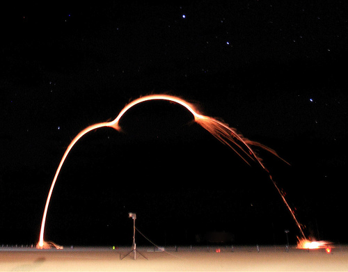
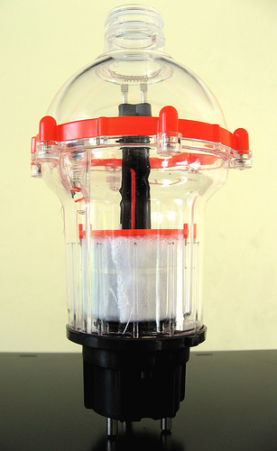
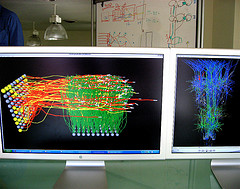

Instrumentación para la observación del flujo solar
Los aparatos utilizados en la medición de la radiación solar, se descomponen en tres tipos principales, según sea la medida a realizar; a continuación se describen algunos de ellos. 
Heliógrafos
Los heliógrafos sirven para medir o calcular la duración de la luz solar, que se puede definir como el intervalo o espacio de tiempo durante el cual se ve el disco solar. Los heliógrafos determinan los períodos del día durante los cuales la intensidad de la radiación directa es superior a un cierto umbral, que está reconocido a nivel mundial y vale 120 W/m2.
El intervalo de tiempo transcurrido entre la salida y la puesta de Sol, define el máximo tiempo de radiación solar diaria posible, para un día concreto del año y para un lugar determinado. Los heliógrafos no comienzan a registrar la radiación solar hasta que la radiación directa es superior a un cierto valor, variable de un tipo de aparato a otro. El registrador de referencia intermedio de luz solar (IRSR) tiene un mínimo de intensidad de 210 W/m2, equivalente a 1/5 de la máxima posible; debido a las variaciones entre los instrumentos, este umbral puede oscilar entre 7 y 28 W/cm2.
Pirheliómetros
Los pirheliómetros sirven para medir la radiación solar directa. Tienen una abertura y una cara de recepción que debe permanecer siempre normal a los rayos solares. El pirheliómetro recibe energía sólo del disco solar y de un estrecho anillo de cielo contiguo, a través de un tubo largo; este aparato tiene un dispositivo automático de seguimiento del Sol. El error provocado por una abertura excesiva, aumenta en proporción a la cantidad de radiación del cielo admitida. El pirheliómetro de disco de plata de Abbot, permite deducir o inferir la intensidad de la radiación directa a partir de lecturas termométricas sucesivas, abriendo y cerrando alternativamente la entrada del aparato, estando sometido a unas normas muy estrictas, ya que el tiempo de exposición tiene que ser muy preciso. Consiste en un disco de plata ennegrecida por una de sus caras. Este disco de plata tiene un agujero ciego en el que se inserta un termómetro aislado por un manguito de madera. El disco está situado en el fondo de un tubo de latón que se puede obturar o cerrar con ayuda de una pantalla móvil situada en el otro extremo; de esta forma se puede exponer el disco durante un tiempo determinado a la radiación solar, actuando el aislante como elemento refrigerante es decir que enfríe o hiele. El ángulo de abertura es de 5,7°. 
Piranómetros
Los piranómetros sirven para medir la radiación global, directa y difusa, que se recibe en todas direcciones, por lo que el instrumento tiene que descansar sobre una base horizontal. La banda de frecuencias medida por el piranómetro está entre 0,3 m y 3 m. El piranómetro mide solo la radiación difusa cuando está protegido de la radiación directa por un anillo protector desvanecedor. 
Los piranómetros más usuales se basan en el descubrimiento de la diferencia de temperaturas entre una superficie negra y una superficie blanca mediante células fotoeléctricas. Estas células fotoeléctricas deben de estar protegidas del viento y compensadas para cambios de temperatura ambientales usando una doble semiesfera de vidrio para suprimir o eliminar los fenómenos de convección. Por fenómeno de convección se comprende el transporte en un fluido de una magnitud física, como masa, electricidad o calor, por desplazamiento de sus moléculas debido a diferencias de densidad. Mediante un nivel se consigue la horizontalidad del aparato.